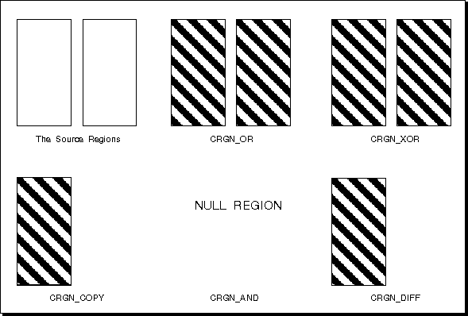

To create a rectangular region, call GpiCreateRegion. This function accepts, as input, the number of rectangles to be ORed into a single region and the coordinates of those rectangles. If the number of rectangles is 0, an empty region is created.
To create a new region from regions that already exist, call GpiCombineRegion. This function accepts, as input, a region handle for the target region, a region handle for each of the two source regions, and an options flag that specifies the way the two source regions are combined.
Note: The destination region can be either of the two source regions, in which case, that region is replaced by the new region.
The rectangles are differentiated by one region's being distinctly "the first source rectangle" and the other region labeled "the second source rectangle". The order of the source rectangles affects the way GpiCombineRegion combines them. You can use GpiCombineRegion an indefinite number of times to form complex polygons. However, the function is limited to combining only two regions each time it is called. The two source regions must be created for the same type of device.
Following are the five ways in which two regions can be combined:
Option
The effects of these different combining operations on overlapping regions are shown in The effects of these different combining operations on overlapping regions are shown in the following figure. Their effects on separate regions are shown in Their effects on separate regions are shown in the figure after the following figure.
Combining Overlapping Regions
The source regions are two overlapping rectangles. The regions that result from the various combine operations are shown as shaded areas.
Output from GpiCombineRegion tells you whether the resulting region is a NULL region, rectangular region, or complex region. A complex region is any region defined by two or more rectangles.
To change the definition of a region while keeping the same region handle, call GpiSetRegion. This function accepts, as input, the number and dimensions of the rectangles that now define the region, just as GpiCreateRegion does. However, GpiSetRegion also accepts the handle of the region to be updated. GpiSetRegion, like GpiCreateRegion, takes a region definition to be the union of a sequence of rectangles (that are effectively ORed together). In the case of GpiCreateRegion, a new region is created and its handle returned. In the case of GpiSetRegion, the previous definition is discarded and replaced by the new definition that is associated with the existing region handle.
Combining Disjoint Regions
The two source regions do not overlap. The regions that result from the various combine operations are shown as shaded areas. The result from a CRGN_AND combining of separate regions is a NULL region.